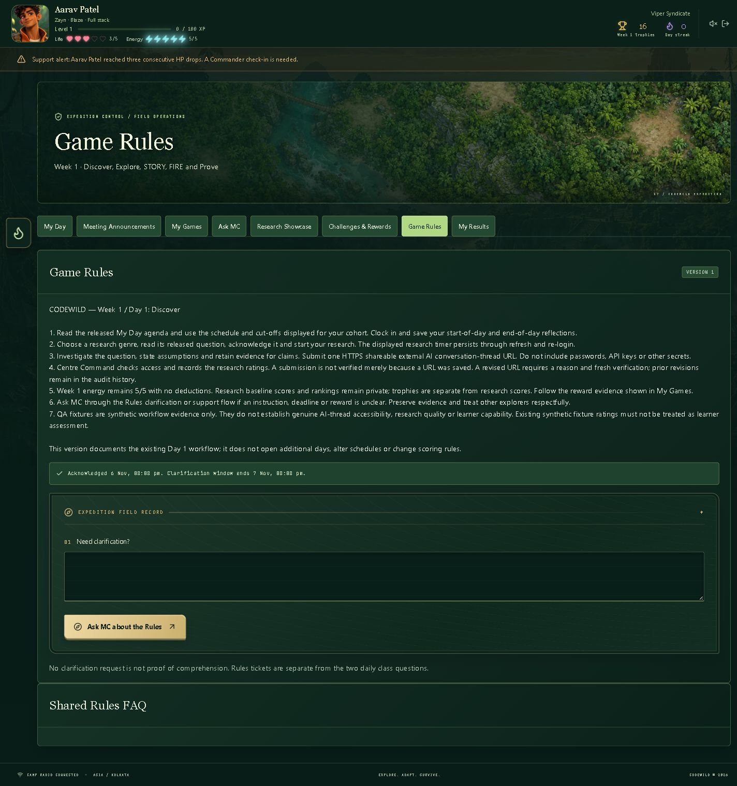

6 November 2026 · Asia/Kolkata. Addendum to the original executed QA report. Original observations are retained for audit history.
The live Game Rules failure is fixed. The fresh release and pre-release coverage blockers were cleared in an isolated local browser cohort. Genuine external AI conversation access/content remains unverified under the user's authorised synthetic-fixture scope.
node scripts/preview-day-one.mjs --qa-fresh starts a disposable local Day 1 with rules published, Day 1 PREPARED and no learner attempts. Its MongoDB URI is created in memory and overrides the workspace database; it does not reset or clone live learner data. Normal preview fixtures now publish rules before opening days.| Test / outcome | Persona, environment and steps | Expected | Observed / evidence |
|---|---|---|---|
| N08 / CW-001 PASS — fixed live Previous severity: Medium | CC, deployed site: Week 1 → Rules & Audit. Enter Day 1 rules and remediation reason; publish. Gamer: sign in separately → Game Rules. Read, click Yes, I understand, then refresh. | Published version and text visible to Gamer; acknowledgement saves and persists. | VERSION 1 and full rules visible. Receipt: Acknowledged 6 Nov, 20:08 IST; clarification window ends 7 Nov, 20:08 IST. Same receipt after refresh. CC publication, Gamer rules, persisted receipt, exact live observation. |
| J01 PASS — isolated browser Coverage blocker cleared locally | Start fresh disposable fixture. Gamer first visits My Games. Switch to CC Karun and open Week 1; click Open Day 1. Inspect Day release history. Switch to MC and open Week 1; filter Aarav. Switch back to Gamer and check in. | Only prepared Day 1 opens; audit attributes release to CC; MC sees release/assigned Gamer; Gamer can act after opening. | Day 1 PREPARED → OPEN. Audit: usr_cc02, 6 Nov 20:05:57 IST, Content v1. MC sees OPEN and Aarav. Gamer check-in succeeds and awards 1/20 trophies; research genre control and 90:00 timer become available. Days 2–5 remain DRAFT. CC opening, MC verification, actionable Gamer activity. This does not assert a new production release. |
| N07 PASS — isolated browser plus database acceptance | Before CC opening in fresh fixture, sign in as Gamer Aarav and navigate directly to My Games. Inspect activity controls. The database acceptance suite also invokes the real clock action before opening. | Activity cannot be started/submitted before release; server rejects pre-release write. | Browser displays Preparing your next mission and Your Mission Commander will open this activity when it is ready; no research submission/start/check-in controls. After release, check-in works. Database acceptance asserts pre-release clock returns 409. locked Gamer screen, after opening, executed test log. No unavailable Submit button was falsely claimed as clicked. |
| Release regression PASS — automated | Prepare Day 1 with no published rules. Try CC open; then try MC rules publication. Publish rules as CC, race authorised open attempts and inspect stored day. | Missing rules block opening atomically; only CC can publish; opening records rules version; stale/concurrent opening does not duplicate release. | 409 before rules, PREPARED unchanged, zero OPEN events. MC publication 403. After CC publication, rulesVersion=1; exactly one concurrent open succeeds and day.rulesVersion=1. Helper rejects missing/invalid/unattributable rule versions. test log. |
| G01 BLOCKED — genuine evidence still unavailable | Real external research conversation accessibility/content verification, independent of the authorised synthetic workflow. | Open a genuinely shared AI research conversation, inspect access and content and assess genuine evidence. | No genuine conversation was supplied. The user explicitly chose reuse of the existing synthetic fixture. No code change can make synthetic evidence genuine; no dummy URL or assumed-loaded evidence is promoted to a PASS here. A real publicly shareable conversation is required to execute this check. |
111 automated checks PASS, zero failures, zero skipped. Executed npm run test:week1 against disposable MongoDB. The first run found an old test fixture trying to recreate a programme record after rules publication created it; that fixture now updates only its intended publication fields. The complete rerun passed. Final test log.
npm run build passed. Build log. Prettier check and git diff --check passed. The initial sandbox denied localhost database access and generated build-directory creation; both checks were rerun with the required permissions.
The original run's 23 PASS checks are historical evidence. This retest closes N08 live and exercises J01/N07 locally; it does not relabel the original production release as newly executed. Genuine AI evidence remains the sole original unexecuted coverage item. Deploy the tested code to prevent recurrence on future day opening, then repeat the missing-rules release regression against that deployment. No deployment was performed in this turn.
The original production Day 1 research fixture, synthetic ratings and 16 trophies were retained. Rules acknowledgement was verified with the Gamer header still showing 16 Week 1 trophies and 5/5 energy. All browser sessions were signed out, the temporary viewport override was cleared, and the isolated preview process was stopped.

Browser JPG text fidelity is limited; the adjacent observation transcript preserves the exact rendered labels and receipt.